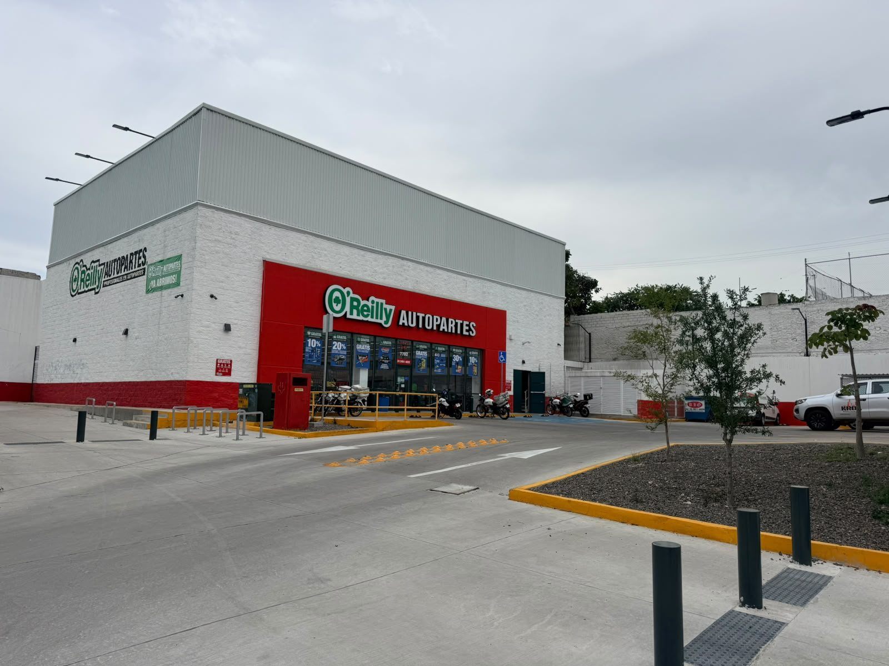
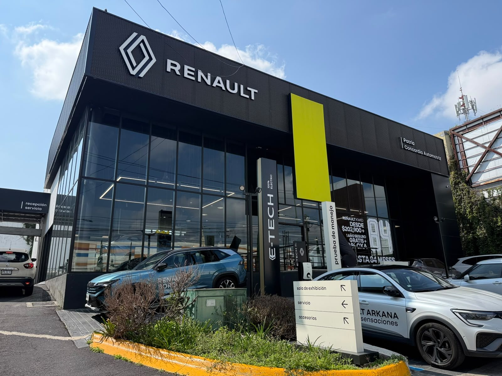
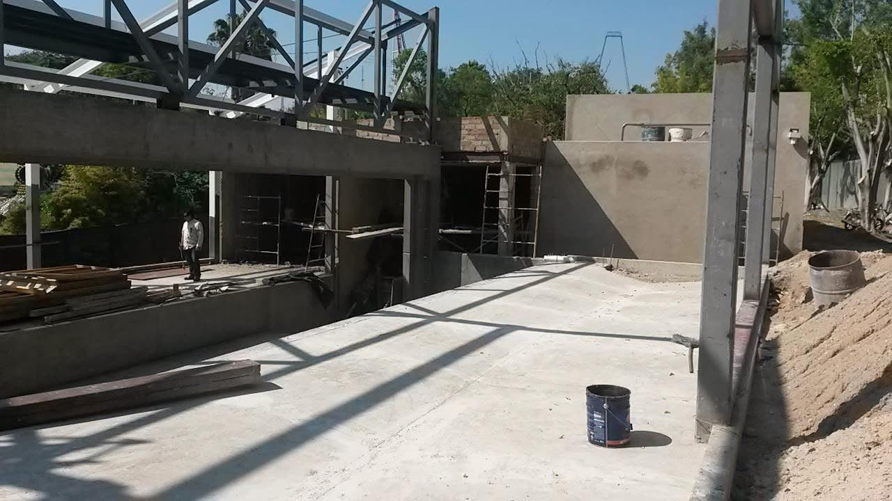
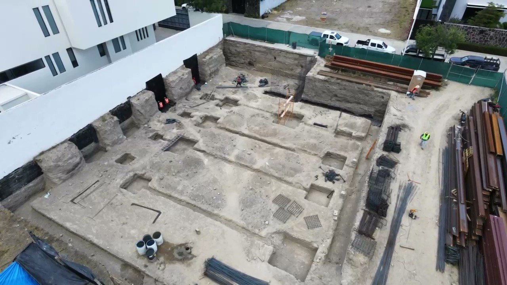
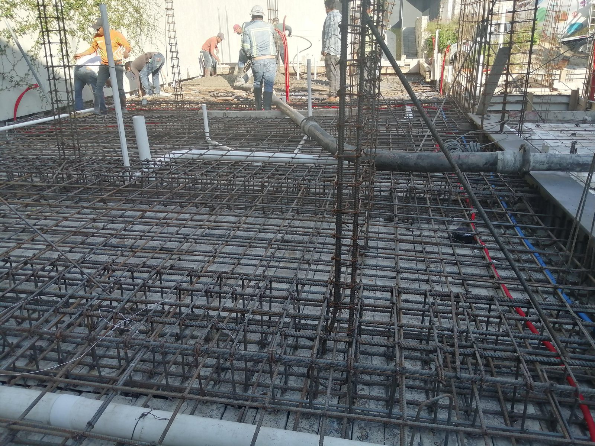
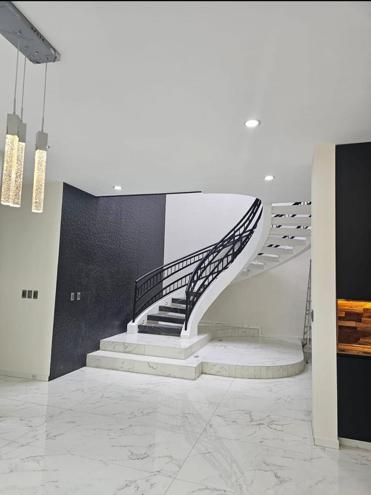
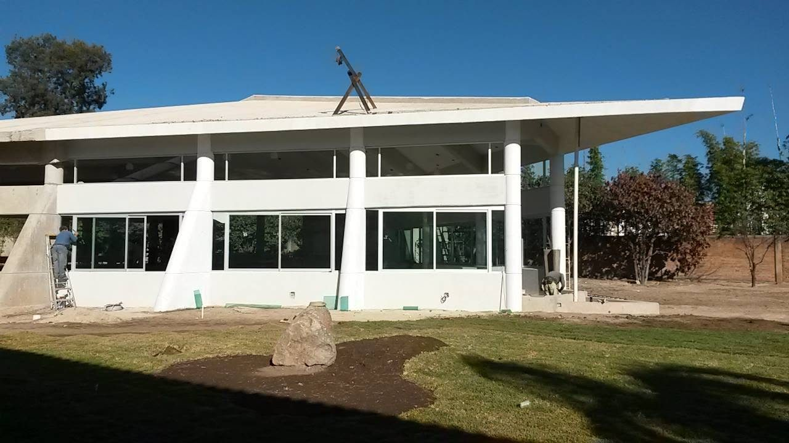
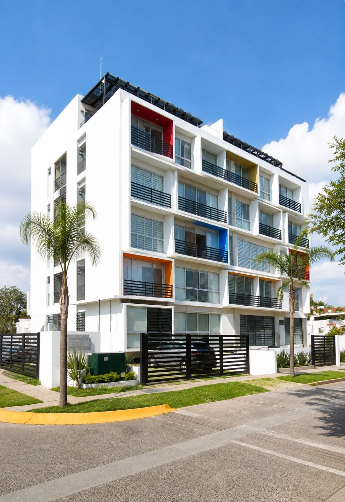
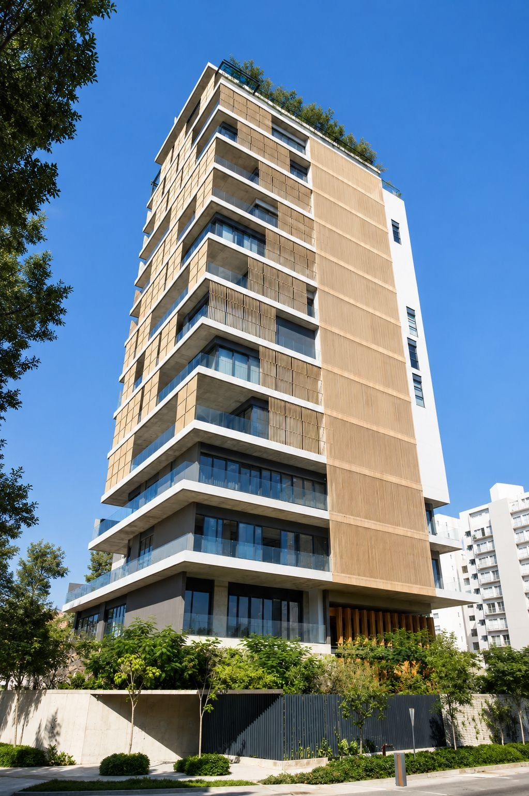

Portafolio
Obra ejecutada
Cimentaciones, muros y estructuras para cadenas comerciales, agencias automotrices, naves industriales y vivienda.
01 — Portafolio
Proyecto por proyecto
↗






En ejecución





02 — En obra
El trabajo,
mientras sucede
Nada explica mejor un proceso constructivo que verlo. Ésta es una escalera de concreto colada en sitio y entregada con el acabado a la vista.
- Escalera de concretoAgencia automotriz
- Colado en sitioAcabado aparente
Han confiado en KROL
Contacto
Hablemos de
tu proyecto
Nosotros nos encargamos del resto.
Mándanos planos o una descripción del alcance y te regresamos presupuesto y programa de obra.
Solicitar presupuesto